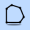

Polygons¶
Important
This section applies to SCI1.1 only
Polygons are used for a several reasons in SCI1.1:
- Mainly, they are used for the pathfinding algorithms to delineate areas that the ego can’t enter (or to which it is constrained).
- For hit testing static objects in the game
- To move an actor along a path

A contained access polygon used in room 117 in Space Quest 5.
Polygons are not actually part of pic resource itself, they are added in code. SCICompanion, however, streamlines this workflow significantly for you so that it’s nearly transparent.
Drawing polygons in the Pic Editor¶
To draw polygons, click on the polygon tool .
The cursor will change, and you will be able to start drawing lines by left-clicking. Left-clicking on the first point of the polygon will complete that polygon. Alternatively, you can right-click anywhere to complete the polygon. Once a polygon is completed, it is added to the polygon list in the Toolbox pane.
Note
The winding order (clockwise or counterclockwise) of polygon points does matter, but SCICompanion will automatically fix this up for you.
Editing polygons¶
To select a polygon, select its name in the polygon list. You will then be able to drag the points of the polygon to modify its shape. You can also right-click on a point to delete it, or right-click on an edge to split that edge.
The polygon points are shown in the edit box below the polygon list. You can copy and paste from this edit box. This is handy if you’re copying and pasting polygon points from scripts.
When you change the points in the edit box, you need to press the upload button  to push them back to the selected polygon.
to push them back to the selected polygon.
Polygon types¶
There are four polygon types in SCI. The type of a polygon is important when the polygon is used for pathfinding.
- Barred Access polygons are avoided during pathfinding. They represent areas the ego can’t enter.
- Contained Access polygons represent an area that the ego is confined to. It usually only makes sense to have a single Contained Access polygon in a room.
- Total Access polygons are avoided during pathfinding, unless the destination lies inside the polygon. This is useful if a special game event would be triggered if the ego stepped into the Total Access polygon and you only want that to happen if the ego is explicitly sent to that location by the player.
- Nearest Access polygons (like Total Access polygons) are avoided during pathfinding unless the destination is in the polygon. When entering or leaving a Nearest Access polygon, the ego enters/leaves from the closest point on the polygon edge.
In Code¶
When you save a pic resource, its polygons are also saved into an nnn.shp script header file (where nnn is the pic number). This file is automatically written to and read from by the Pic Editor.
Default (unanmed) polygons¶
The most common use case for polygons is to set up static pathfinding boundaries for a room. In that case, don’t give polygons a name. They will be added to the list of default polygons for a room, which will be contained in a P_Defaultnnn script variable in the .shp file for that room. When you create a new room in SCICompanion, the .shp file will be included from the room script, and follow code is added for you in the room’s init method (in this example the room number is 110):
AddPolygonsToRoom(@P_Default110)
And if you look in 110.shp, you might see something like this:
// 110.shp -- Produced by SCI Companion
// This file should only be edited with the SCI Companion polygon editor
(local
P_Default110[15] = (1 PContainedAccess 21 171 137 180 137 179 128 113 136 23 142 3 149 )
)
The point being, after you have add or modified any default polygons in the pic, all you need to do is recompile the scripts that use the pic’s .shp file, and you’re good to go. You shouldn’t need to touch any code.
Named polygons¶
Sometimes you’ll need to give polygons names so you can refer to them directly in code. This is useful if the polygon defines the boundary of a clickable feature, say, or if you need to dynamically add pathfinding boundaries depending on some game state.
To do so, select a polygon, type in its name in the Name edit box, and press the upload button . In that case, assuming you called one
polygon “Waterfall” and another one “Lake”, you might end up with something like this
in the .shp file:
// 110.shp -- Produced by SCI Companion
// This file should only be edited with the SCI Companion polygon editor
(local
P_Default110[15] = (1 PContainedAccess 21 171 137 180 137 179 128 113 136 23 142 3 149 )
P_Waterfall[13] = (1 PBarredAccess 5 163 145 181 46 193 27 226 21 230 146 )
P_Lake[19] = (1 PBarredAccess 8 310 152 313 161 254 172 128 169 35 160 36 152 94 148 157 147 )
)
In script, you can assign the polygon to a feature’s “onMeCheck” like this:
(lake:
setOnMeCheck(omcPOLYGON CreateNewPolygon(@P_Lake))
init()
)
Note that any named polygons will not appear in the default polygons for that room.
If you need to remove the name of a polygon to set it back to being a “default polygon”, just give it a blank name.
See AddPolygonsToRoom() and CreateNewPolygon().